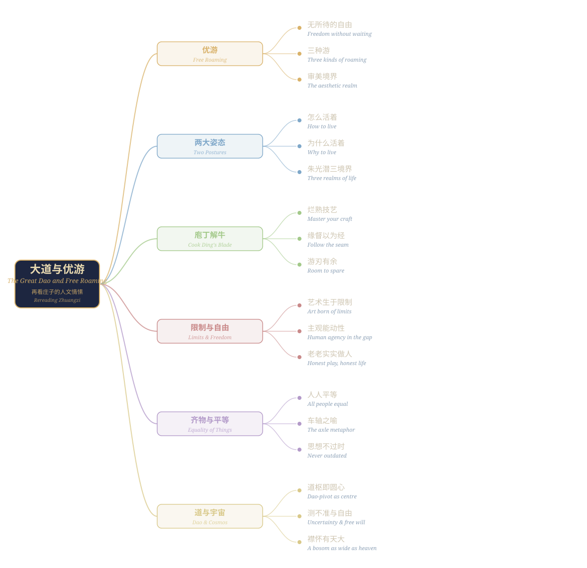

大道与优游：再看庄子的人文情愫
〇 · 书籍信息
基本信息
| 书名 | 《大道与优游》——书名即全书判词：「大道」是庄子的哲学底座，「优游」是庄子的人文理想——优游，就是无忧无虑、自由自在、绝对随意地闲逛，是「无所待」的精神绝对自由 |
|---|---|
| 作者 | 见君：民间学者，前作《原本的真实》——自称「人格多重派」的解庄人：不进学院的路数，每篇先自己译「白话原文」，再写「联想与思考」——庄子讲完，他接着唠 |
| 结构 | 前言 + 内篇（逍遥游 / 齐物论 / 养生主 / 人间世 / 德充符 / 大宗师 / 应帝王）+ 内篇小结 + 外篇 + 外篇小结 + 杂篇 + 后记——三十三篇全部讲完，后记用宇宙物理学给庄子的「道」收口 |
| 立场 | 前言的出发点：「化腐朽为神奇这种事，并不是圣人神人才能做到的，而是人人都能做得到的」——西方工业文明两百年富强而精神荒芜，回头看被轻视的古代文明：这是一次「再看庄子」的平反 |
| 一句话 | 庄子的优游不是逃避现实，是精神的绝对自由——它在马三立的相声里、在大师的画前、在庖丁的刀缝里：短暂，但真实；而通往它的路，恰恰是把本职工作干到出神入化。 |
一 · 核心主题总览
这本解庄书里的四组母题：① 优游即无所待
《逍遥游》被拆出三个层次：「游有三种：优游、远游、一窜」——蝉与斑鸠往上一窜是「小康」类的小手笔，大鹏乘六月海风飞九万里是「远游」，但要等风、要补给，「都不符合『无所待』的优游」——「优游的本质是『无所待』的绝对的自由」：不用等外物、不靠关系网，只凭自己——庄子的理想是「在审美境界里优游」。
② 两大问题与三境界
作者给人生先搭好坐标系：「人生有两大问题：一个是怎么活着（游戏姿态），一个是为什么活着（工作姿态）」——庄子的著作主要属于前者：如何愉悦自己的精神；再借朱光潜的人生三层面（俗务 / 事业 / 审美）佐证：「对于一棵树，木材商人考虑着如何砍下来卖钱，科学家研究这树有什么特性，画家欣赏这树的形象与气韵」——三个境界相互贯通，而庄子守的是第三个。
③ 庖丁解牛的真意
《养生主》被讲成优游的操作手册：「养生」实为「做人」——庄子借庖丁示范两条：一要「烂熟于人生技艺」——「你要是宰牛的，就宰到庖丁的程度，再来谈道」；二要「缘督以为经」——人的主观能动性存在于「肉与筋之间」那条缝隙里：「当你的刀在肉与筋骨之间飞快地游走时……此正是优游之际，精神绝对自由之时」——游刃有余不是滑头，是懂了限制中才有自由。
④ 庄子与宇宙
后记做了一件少有人做的事：用宇宙物理学给庄子的道作证——宇宙大爆炸「万物源于一」对上庄子的道；测不准原理对上「道在通流」；弯曲时空的球面对上《齐物论》的「道枢」（只讲圆心）；量子随机性对上宿命与自由的并存——「庄子的襟怀有多大？有道那么大；道有多大？有天那么大」：一个两千年前的人凭直觉摸到了宇宙的形状。
二 · 第一段 逍遥游 —— 优游的三重门—— 大鹏 · 列子 · 蝉鸠 ——
三种游与三类志向
《逍遥游》的白话原文之后，作者的「联想与思考」先立坐标：庄子开宗明义告诉我们，他的理想是在审美境界里「优游」——它高于大鹏的九万里之游和列子的御风而行，「更高于蝉与斑鸠们往上一窜之游」——「可以看出，庄子在这里暗示我们游有三种：优游、远游、一窜；人的志向有三类」。接着作者做了历代评论家没做的事：把「绝对自由」从「文学神话」的箱子里请出来——与其争论它能否实现，不如承认它属于精神世界：「把『无所待的绝对自由』这个梦想，放到『如何愉悦自己的精神』这个命题中去，你就会明白『优游』是怎么回事了」。
◆ 语言学习 · 概念 · 优游
| 优游 | 无忧无虑、自由自在、绝对随意的闲逛——庄子的人文理想 |
|---|---|
| 无所待 | 不等六月海风、不需补给——自由的检验标准 |
| 三种游 | 一窜（蝉鸠）· 远游（大鹏列子）· 优游（无所待） |
| 审美境界 | 优游的属地：不是物理自由，是精神愉悦 |
句型 ｜ 「优游的本质是『无所待』的绝对的自由。」——全书的第一命题：自由的分级不看飞多高，看等不等——大鹏再大也要等风：一切「有待」的自由都是打折的自由。
怎么活着与为什么活着
作者引入朱光潜的人生三层面（俗务 / 事业 / 审美，即物质境界、伦理境界、审美境界）：「三个都不可或缺，它们相互贯通、相互转化」——然后自问：既然优游不可能在现实中实现，庄子写文章是在宣泄情绪还是炫耀文采？作者的答案是重构问题本身：「庄子强调的是精神世界里的绝对解脱、绝对自由。只有如此，人的精神才可能愉悦，人的思想才可能优游，人活得才可能有趣味、有意思」。证据全部来自当代人的体验：听马三立相声笑得忘乎所以的那一刻、看大师之画脑中一片空白的那一刻、霍金的《相对论简史》发行时「灵魂深处无法言说的」成就感——「精神上的优游别人是看不见的」：庄子的无何有之乡，人人都到过，只是没人叫它庄子的名字。
◆ 语言学习 · 概念 · 两大姿态
| 两大问题 | 怎么活着（游戏姿态）vs 为什么活着（工作姿态） |
|---|---|
| 人生三境界 | 朱光潜：俗务 / 事业 / 审美——缺一不可 |
| 开悟时刻 | 马三立相声 · 大师之画 · 霍金的成就感——优游的现代标本 |
| 看不见的自由 | 精神优游他人不可见：外人只见大鹏之游与列子之游 |
习语 ｜ 「精神上的优游别人是看不见的。」——庄子式的自由没有观众：他人只能看到你的成就（大鹏之游），看不到你灵魂松绑的那一刻——优游注定是一种私下里的富足。
三 · 第二段 养生主 —— 刀与缝隙—— 烂熟技艺 · 缘督以为经 ——
养生即做人
《养生主》被作者判为优游的操作办法：「主」是灯芯的意思——养生如同呵护一支点燃的蜡烛，时刻小心别让风吹灭；「同时庄子借秦失（佚）之口告诉我们：不管怎么呵护蜡烛，也有燃烧完了的时候；不管怎么养生健身，也是必死无疑」——「说了半天养生，最终只是做人，这就是庄子式的大调侃了。所以，说庄子在讲养生，不如说庄子在讨论如何达到精神上的绝对自由」。第一条路是「烂熟于人生技艺」：「干好自己的工作，干精它，干到出神入化」——宰牛的宰到庖丁的程度，搞文学的学到庄子的程度，搞自然科学的以爱因斯坦为师。
◆ 语言学习 · 概念 · 养生主
| 养生主 | 「主」＝灯芯：养的是那点火苗，不是那具身体 |
|---|---|
| 大调侃 | 养生讲到头是必死——庄子把话题调包成「做人」 |
| 烂熟技艺 | 优游的第一条路：把本职干到出神入化 |
| 爱因斯坦为师 | 搞科学的以想象力得道——道无行业之分 |
句型 ｜ 「你要是宰牛的，就宰到庖丁的程度，再来谈道。」——全书最落地的一句：道不在回避工作里，在把工作做成艺术里——没有出神入化的手艺，谈优游只是躺平的别名。
缘督以为经
第二条路是那句被玄学化的「缘督以为经」——作者先破迷信：「不要和文惠君一样，一听督脉，就好像有什么秘密。人生无秘密。禅宗里有一句话，叫『真传一句话，假传万卷书』」——真传的那一句是：「老老实实做人，规规矩矩唱戏」。然后给出全书最锋利的定理：「人的主观能动性是在一个束缚和压力下才可以产生的」——「艺术，是在限制与压力下才产生的：纸笔限制着绘画，乐器限制着音乐，土木砖瓦限制着建筑，舞台限制着戏剧，牛骨与筋络间的缝隙限制着刀……于是艺术产生矣」——生活的艺术即道，她产生于生活中的种种限制与压力之中。
◆ 语言学习 · 概念 · 缝隙
| 缘督以为经 | 顺着缝隙过日子：不是钻空子投机 |
|---|---|
| 真传一句话 | 老老实实做人，规规矩矩唱戏 |
| 限制生艺术 | 纸笔之限生画、乐器之限生乐——自由以限制为原料 |
| 游刃有余 | 刀在肉与筋之间：宿命里那道可以走刀的空 |
习语 ｜ 「艺术是在限制与压力下才产生的。」——全书的哲学内核：自由不是限制的反面，是限制的作品——会利用缝隙的刀才叫游刃有余，会利用限制的人生才叫优游。
四 · 第三段 齐物论 —— 平等与道枢—— 车轴 · 圆心 · 万物 ——
人人平等的老命题
《齐物论》的解读落在一个现代词上：「从整体上看庄子的思想，这篇是重人性为其理论主体的。庄子……站在人人平等这个立场上」——作者的判词带着两千年后的回望：「从人人平等这个立场上看庄子，至今也不能说他的思想就过时了」——齐物的『齐』，先是人格与万物尊严的齐，然后才是是非彼此的齐。齐物论的工程学形象是车轴：《养生主》的解读里作者顺笔回望：「《齐物论》讲的不就是安做个车轴吗？」——轴不动而轮转：万物的差异在轮辐上，同一性在轴心上。
◆ 语言学习 · 概念 · 齐物
| 齐物 | 万物平等：差异是轮辐，同一在轴心 |
|---|---|
| 人人平等 | 庄子人性论的现代翻译——两千年前的人权先声 |
| 车轴 | 齐物论的工程隐喻：轴静轮动 |
| 不过时 | 检验古典的标准：现代议题还能引用它 |
句型 ｜ 「至今也不能说他的思想就过时了。」——作者为庄子作的资格鉴定：思想的生命力不看年代，看它能不能接住现代的问题——平等这个议题接住了，庄子就还在场。
道枢与圆心
「道枢」被后记的宇宙物理学接走：「弯曲的时空观：时空之所以没有边界，正因为宇宙是一个球形……它只有中心，没有边际。而庄子在《齐物论》中讲了『道枢』，也是只讲圆心」——作者自觉这个类比有牵强之嫌，但「不得不佩服庄子的想象力」：一个靠直觉思维走到的人，摸到了现代物理学画的同一个圆。配套的还有测不准原理与随机性：「正是测不准原理和随机性量子力学，造成了一切事物在小尺度下的不可预测性，这就让人的自由意志有了充分发挥的余地」——「不论人生的规定性有多大，总是有『游刃有余』的海阔天空之处」：宇宙的宿命与自由，和庄子的宿命与自由，模式相同。
◆ 语言学习 · 概念 · 道枢
| 道枢 | 齐物论的圆心：是非彼此绕它旋转 |
|---|---|
| 弯曲时空 | 球形宇宙只有中心没有边际——与道枢同构 |
| 测不准 | 小尺度不可预测——自由意志的物理学许可证 |
| 直觉的力量 | 庄子不懂物理，但直觉走完了同一段路 |
习语 ｜ 「道有多大？有天那么大。」——后记的收口逻辑：庄子的道先于现代宇宙学两千年给出了「无限而有心」的形状——古人不必懂物理，只需要想得够大。
五 · 第四段 后记 —— 襟怀与用法—— 无何有之乡 · 一个场子 ——
一个足够大的场子
全书反复回到一个读庄的先决条件：「要想真正地了解庄子，一定要有一个足够大的场子和一个公正的裁判。这个场子大得能容入人的非理性的情感；这个裁判公正得必然是有血有肉的人，而不是谁的工具或机器」——历史上的裁判太多带立场：极左年代把庄子批成阿 Q 的精神胜利法；学院派把他读成文学神话——作者选择林语堂式的裁判：「人具有隐蔽的情感，愿得披发而行吟，可是这样的行为非孔子学说所容许……道家哲学乃所以说明中国民族性中孔子所不能满足之一面」。
◆ 语言学习 · 概念 · 读庄先决
| 足够大的场子 | 容得下非理性情感的阅读空间 |
|---|---|
| 公正的裁判 | 有血有肉的读者，而非意识形态的工具 |
| 浪漫与经典 | 民族性的两面：庄子的浪漫面 + 孔子的经典面 |
| 人格多重派 | 作者的自我定位：人性何止两面 |
句型 ｜ 「道家哲学乃所以说明中国民族性中孔子所不能满足之一面。」——林语堂的判词被引为全书护法：庄子不是孔子的对立面，是孔子的补集——一个民族同时需要工作姿态与游戏姿态。
失意时你最好独处
后记最后把庄子的道用回日常：「人的一生总会有得意与失意。得意时你尽可以与家人共享，失意时你最好独处，不要把忧伤带给亲人们。喜事告诉亲友，会得到加倍的欢乐；愁事独自吞下，可以使自己成熟，所以独自好好想想、学学庄子的襟怀，并不是什么坏事」——而襟怀的尺寸被无限推远：「庄子的襟怀有多大？有道那么大；道有多大？有天那么大；天有多大？……这就是宇宙物理了」。作者甚至幽默地交代了读法：「不论诸位是正襟危坐地看、是睡前当闲书看、还是在卫生间里看」——庄子的书本来就不是供起来的，是拿来优游的。
◆ 语言学习 · 概念 · 襟怀
| 得意共享失意独处 | 庄子襟怀的第一用法：不迁怒、不扩散忧伤 |
|---|---|
| 喜事加倍愁事成熟 | 分享与独处的分工——情绪的经济学 |
| 无何有之乡 | 庄子的精神原乡：优游者共同的地址 |
| 当闲书看 | 道在日常：把经典读松，才算读进了 |
习语 ｜ 「失意时你最好独处，不要把忧伤带给亲人们。」——全书最生活化的一句：庄子的逍遥不是逃离家庭，是替家庭挡住情绪的风暴——优游者先学会做一个不漏电的人。
六 · 人物图鉴与成长弧线—— 主角配角 · 一张表看穿 ——
主要人物
庄子——被误读两千年的主角——本书的全部努力：把「唯心消极」的标签换成「精神绝对自由」的诗人哲学家——生于宋而由楚文化孕育
见君——民间解庄人——《原本的真实》作者：白话原文 + 联想与思考的体例，把自己当成读者的陪聊——后记里连「在卫生间看」都安排上了
庖丁——优游的操作示范——把宰牛做成艺术的人：刀十九年不用磨，因为他在骨与肉的缝隙里行走——技进乎道的标本
林语堂——被请来的裁判——「有血有肉」的读庄先决条件的化身：把庄子读成民族性浪漫一面的第一人
次要人物（功能位）
| 朱光潜 | 人生三境界的提供者——木材商人 / 科学家 / 画家看同一棵树：审美境界的版权人 |
|---|---|
| 文惠君 | 养生主里的笨学生——一听「督脉」就以为有秘密：被作者用来反衬「人生无秘密」 |
| 霍金 | 后记的宇宙证人——大爆炸、弯曲时空、成就感即开悟：现代物理学替庄子作保 |
| 郭沫若 | 楚文化的鉴定人——「殷商文化崇信鬼神，故其文化色彩充分地带着超现实的气韵」：庄子想象力的人种学出处 |
七 · 主题与象征—— 每个道具都在说话 ——
| 大鹏 ↔ 远游 | 有待的自由——飞得再高也要等风：壮丽，但不是优游 |
|---|---|
| 蝉鸠 ↔ 一窜 | 小康的逍遥——草棵里的幸福是真幸福，只是别拿它冒充九万里 |
| 刀 ↔ 缝隙 | 游刃有余——骨与肉之间那道空：宿命给自由留的合同条款 |
| 蜡烛 ↔ 养生 | 养生主的原意——护的是火苗不是灯身：必死的身体养不住，可养的是精神 |
| 道枢 ↔ 圆心 | 弯曲时空的同构——两千年的直觉与现代物理握手：无限而有心 |
八 · 写作手法赏析—— 怎么写，就能怎么学 ——
① 白话 + 联想体例
先译后聊——每篇「白话原文」保底，「联想与思考」放飞：入门者不掉队，老读者有嚼头
② 现代体验举证
马三立相声 · 大师之画 · 霍金 · 斯琴高娃——用当代人的开悟时刻给「优游」找到实物证据：古典概念不再悬空
③ 破玄学化
「人生无秘密」——先拆督脉之类的神秘主义读法，再给出大白话的真传：解庄先解玄
④ 跨学科收口
后记的宇宙物理学——大爆炸 / 测不准 / 弯曲时空给庄子的道做物理背书：想象力即合法性
⑤ 口语化写作
「对机了就有用，谁看了谁烦就是垃圾文学」——作者自嘲式的前后记：把学术姿态降到聊天姿态，反而贴近庄子的游戏姿态
九 · 名段欣赏—— 原文精读 · 逐段赏析 ——
十 · 金句摘录—— 14 条 · 中英对照 · 带出处 ——
"优游，就是无忧无虑、自由自在、绝对随意地闲逛。"—— 内篇 · 逍遥游
"优游的本质是「无所待」的绝对的自由。"—— 内篇 · 逍遥游
"人生有两大问题：一个是怎么活着（游戏姿态），一个是为什么活着（工作姿态）。"—— 内篇 · 逍遥游
"庄子强调的是精神世界里的绝对解脱、绝对自由。"—— 内篇 · 逍遥游
"只有如此，人的精神才可能愉悦，人的思想才可能优游，人活得才可能有趣味、有意思。"—— 内篇 · 逍遥游
"一个民族常有一种天然的浪漫思想，与天然的经典风尚。"—— 内篇 · 逍遥游 · 引林语堂
"你要是宰牛的，就宰到庖丁的程度，再来谈道。"—— 内篇 · 养生主
"生命的关键，就在于精神的自由。"—— 内篇 · 养生主
"真传一句话，假传万卷书。"—— 内篇 · 养生主 · 引禅宗
"艺术，是在限制与压力下才产生的。"—— 内篇 · 养生主
"人的主观能动性是在一个束缚和压力下才可以产生的。"—— 内篇 · 养生主
"从人人平等这个立场上看庄子，至今也不能说他的思想就过时了。"—— 内篇 · 齐物论
"庄子的襟怀有多大？有道那么大；道有多大？有天那么大。"—— 后记
"得意时你尽可以与家人共享，失意时你最好独处，不要把忧伤带给亲人们。"—— 后记
十一 · 拓展阅读—— 原文 · 词条 · 译文 ——
十二 · 个人感悟与心得—— 三点心得 ——
三点感悟
① 先把手艺练到出神入化
庖丁的启示：精神自由的入场券是技艺——工作中的「游刃有余」就是优游的日常形态：与其羡慕自由，先把自己那把刀磨到骨肉分明处也能走。
② 自由以限制为原料
「艺术在限制与压力下产生」：这条定理可以反向使用——当你感到处处受限时，那正是艺术与创造的原料到位之时：缝隙不找不有，限制读透了就是图纸。
③ 给精神留一个审美的账户
朱光潜三境界与两大姿态：俗务与事业是必须的，但审美境界是精神的养老金——定期存入相声、画、音乐与成就感，人在失意时才有庄子的襟怀可取。
读完这本《大道与优游》，庄子不再是课本里那个「唯心主义思想家」，而是一个把自由安放进缝隙里的人：大道至宽，优游至小——小到一把刀与一条缝的距离；但正是这条缝，让两千年来所有不自由的人，都有了一个可以侧身而过的出口。
十三 · 一页速查（复习用）
| 优游 | 无所待的精神绝对自由：三种游里最高的那种 |
|---|---|
| 两大姿态 | 怎么活着 vs 为什么活着：庄子守着游戏姿态 |
| 庖丁解牛 | 烂熟技艺 + 缘督以为经：优游的操作手册 |
| 限制生艺术 | 缝隙里才有刀路：主观能动性的物理学 |
| 道与宇宙 | 道枢即圆心：庄子的襟怀有天那么大 |
十四 · 全书思维导图—— 一图纵览 ——

一图纵览全书骨架 · 中英双语对照 · 手机端可左右滑动查看全图